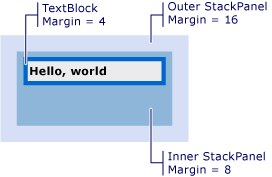

Практическое руководство. Получение смещения визуального объекта
Эти примеры демонстрируют получение значение смещения визуального объекта относительно своего родительского элемента, или любой предков или потомков.
Пример
В следующем примере разметки показан TextBlock , определенный с Margin значение 4.
<TextBlock Name="myTextBlock" Margin="4" Text="Hello, world" />
В следующем примере кода показано, как использовать GetOffset метод для извлечения смещение TextBlock. Значения смещения содержатся в возвращаемом Vector значение.
// Return the offset vector for the TextBlock object.
Vector vector = VisualTreeHelper.GetOffset(myTextBlock);
// Convert the vector to a point value.
Point currentPoint = new Point(vector.X, vector.Y);
Смещение учитывает Margin значение. В этом случае X равен 4, и Y — 4.
Возвращаемое значение смещения является относительно родительского элемента из Visual. Если вы хотите вернуть значение смещения, не является относительно родительского элемента из Visual, используйте TransformToAncestor метод.
Получение смещения относительно предка
В следующем примере разметки показан TextBlock , вложенный в двух StackPanel объектов.
<Window xmlns="http://schemas.microsoft.com/winfx/2006/xaml/presentation"
xmlns:x="http://schemas.microsoft.com/winfx/2006/xaml" >
<StackPanel Margin="16">
<StackPanel Margin="8">
<TextBlock Name="myTextBlock" Margin="4" Text="Hello, world" />
</StackPanel>
</StackPanel>
</Window>
Ниже показаны результаты разметки.

TextBlock, вложенные в двух элементы управления StackPanel
В следующем примере кода показано, как использовать TransformToAncestor метод для извлечения смещение TextBlock относительно содержащего Window. Значения смещения содержатся в возвращаемом GeneralTransform значение.
// Return the general transform for the specified visual object.
GeneralTransform generalTransform1 = myTextBlock.TransformToAncestor(this);
// Retrieve the point value relative to the parent.
Point currentPoint = generalTransform1.Transform(new Point(0, 0));
Смещение учитывает Margin значения для всех объектов класса Window. В этом случае X равно 28 (16 + 8 + 4), и Y равно 28.
Возвращаемое значение смещения задается относительно предком Visual. Если вы хотите вернуть значение смещения относительно потомка Visual, используйте TransformToDescendant метод.
Получение смещения относительно потомка
В следующем примере разметки показан TextBlock содержится в StackPanel объекта.
<StackPanel Name="myStackPanel" Margin="8">
<TextBlock Name="myTextBlock" Margin="4" Text="Hello, world" />
</StackPanel>
В следующем примере кода показано, как использовать TransformToDescendant метод для извлечения смещение StackPanel относительно его дочерних TextBlock. Значения смещения содержатся в возвращаемом GeneralTransform значение.
// Return the general transform for the specified visual object.
GeneralTransform generalTransform1 = myStackPanel.TransformToDescendant(myTextBlock);
// Retrieve the point value relative to the child.
Point currentPoint = generalTransform1.Transform(new Point(0, 0));
Смещение учитывает Margin значения для всех объектов. В этом случае X равно -4, и Y равно -4. Значения смещения являются отрицательными, поскольку родительский объект имеет отрицательное значение смещения по отношению к его дочернего объекта.